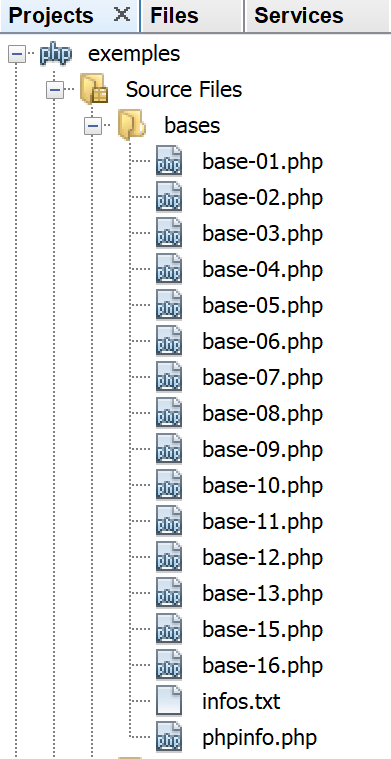
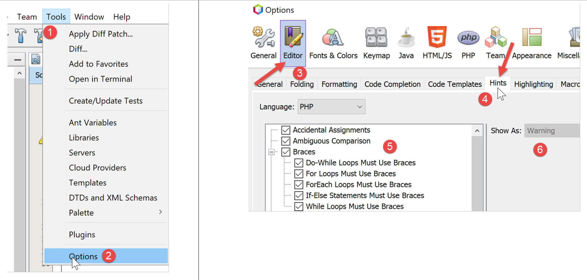

3. Les bases de PHP
3.1. L’arborescence des scripts

3.2. Configuration de PHP
PHP arrive préconfiguré par un fichier texte [php.ini]. Toutes ces configurations peuvent être changées par programmation. La configuration de PHP influence grandement l’exécution des scripts. Il est donc important de la connaître. Le script suivant [phpinfo.php] le permet :
Commentaires
- ligne 3 : la fonction [phpinfo] affiche la configuration de PHP ;
Résultats de l’exécution
La fonction [phpinfo] affiche ici plus de 800 lignes de configuration. Nous n’allons pas les commenter car la plupart concerne un usage avancé de PHP. Une ligne importante est la ligne 13 ci-dessus : elle indique quel fichier [php.ini] a été utilisé pour configurer le PHP que vous allez utiliser pour exécuter vos scripts. Si vous souhaitez modifier la configuration d’exécution de PHP, c’est ce fichier qu’il vous faut modifier. De nombreux commentaires sont présents dans ce fichier pour expliquer le rôle des différentes configurations.
3.3. Un premier exemple
3.3.1. Le code
Ci-dessous, on trouvera un programme [bases-01.php] présentant les premières caractéristiques de PHP.
1 2 3 4 5 6 7 8 9 10 11 12 13 14 15 16 17 18 19 20 21 22 23 24 25 26 27 28 29 30 31 32 33 34 35 36 37 38 39 40 41 42 43 44 45 46 47 48 49 50 51 52 53 54 55 56 57 58 59 60 61 62 63 64 65 66 67 68 69 70 71 72 73 74 75 76 77 78 79 80 81 82 83 84 85 86 87 88 89 90 91 92 93 94 95 96 97 98 99 100 101 102 103 104 105 106 107 | |
Les résultats :
Commentaires
- ligne 5 : en PHP, on ne déclare pas le type des variables. Celles-ci ont un type dynamique qui peut varier au cours du temps. \$nom représente la variable d'identifiant nom ;
- ligne 7 : pour écrire à l'écran, on peut utiliser l'instruction print ou l'instruction echo ;
- ligne 9 : le mot clé array permet de définir un tableau. La variable \$nom[\$i] représente l'élément \$i du tableau \$tableau ;
- ligne 11 : la fonction count(\$tableau) rend le nombre d'éléments du tableau \$tableau ;
- lignes 13-15 : une boucle. Celle-ci n’ayant qu’une instruction, les accolades sont alors facultatives. Dans la suite de ce document, nous mettrons systématiquement les accolades quelque soit le nombre d’instructions ;
- ligne 14 : les chaînes de caractères sont entourées de guillemets " ou d'apostrophes '. A l'intérieur de guillemets, les variables \$variable sont évaluées mais pas à l'intérieur d'apostrophes ;
- ligne 17 : la fonction list permet de rassembler des variables dans une liste et de leur attribuer une valeur avec une unique opération d'affectation. Ici \$chaine1="chaine1" et \$chaine2="chaine2" ;
- ligne 19 : l'opérateur . est l'opérateur de concaténation de chaînes ;
- lignes 83-86 : le mot clé function définit une fonction. Une fonction rend ou non des valeurs par l'instruction return. Le code appelant peut ignorer ou récupérer les résultats d'une fonction. Une fonction peut être définie n'importe où dans le code.
- ligne 92 : la fonction prédéfinie getType(\$variable) rend une chaîne de caractères représentant le type de \$variable. Ce type peut changer au cours du temps ;
- ligne 45 : l’opérateur === compare deux éléments de façon stricte : il faut qu’ils aient le même type pour être comparés. L’opérateur == est moins strict : deux éléments peuvent être égaux sans être du même type. C’est ce que montrent les instructions des lignes 50-60. Dans le cas de l’opérateur ==, la comparaison se fait après transtypage des deux éléments comparés dans un même type. Des conversions implicites ont alors lieu. Il est assez facile « d’oublier » la présence de ces conversions implicites et d’aboutir ainsi à des résultats imprévus, tels que de découvrir qu’une condition est vraie alors que vous l’attendiez fausse. Pour éviter cet écueil, nous utiliserons systématiquement l’opérateur de compraison === ;
- ligne 64 : on peut utiliser également les opérateurs booléens or et ! ;
- ligne 69 : à la place de la notation array(), on peut utiliser la notation [] pour initialiser un tableau depuis PHP7 ;
- ligne 80 : la fonction prédéfinie exit arrête l’exécution du script ;
- ligne 107 : la balise ?> signale la fin du script PHP. Elle n’est pas indispensable. De plus, dans un contexte web, elle peut poser problème si elle est suivie par des espaces ou des marques de fin de ligne, difficiles à détecter car non visibles dans un éditeur de texte. Aussi dans la suite du document, nous omettrons systématiquement cette balise ;
Note : dans ce document, nous utiliserons le mot clé [print] pour afficher du texte sur la console. Une autre méthode pour faire la même chose est d’utiliser le mot clé [echo]. Il y a de subtiles différences entre ces deux mots clés, mais dans le contexte de ce document il n’y en aura aucune. Si donc vous préférez utiliser [echo], alors faites-le.
3.3.2. Usage de Netbeans
Netbeans émet divers avertissements qu’il est utile de vérifier. Prenons l’exemple du script [bases-01.php] :

A la ligne 5, Netbeans émet un avertissement comme quoi le fichier ne respecte pas la recommandation PSR-1 (PHP Standard Recommendations n° 1). Les PSR sont des recommandations pour produire un code standard et ainsi faciliter l’interopérabilité et la maintenance de codes écrits par différentes personnes. Il peut être ennuyeux d’avoir des avertissements si on veut transgresser délibérément les standards, parce que par exemple l’équipe du projet en a d’autres. Ce que l’on souhaite vérifier ou pas avec Netbeans est configurable :

- en [5], on trouve les éléments que l’on veut contrôler avec Netbeans ;
- en [6], le niveau de sévérité assigné à l’erreur signalée par Netbeans ;

On voit en [7] qu’on a demandé à contrôler que le code suit bien les recommandations PSR-0 et PSR-1. Il n’y a rien d’obligatoire. En phase d’apprentissage du langage, ll est conseillé de contrôler le maximum d’options proposées par Netbeans. On apprend ainsi beaucoup de choses. On adaptera ensuite ce contrôle de Netbeans aux normes de codage de l’équipe d’un projet.
Voyons les normes de codage PSR-1 [8, 9] :
Option | Contrôle |
• Class Constant Declaration | Class constants MUST be declared in all upper case with underscore separators. Ex : const TAUX_TVA |
• Method Declaration | Method names MUST be declared in camelCase(). Ex : public function executeBatchImpots{} |
• Property Name | Property names SHOULD be declared in $StudlyCaps, $camelCase, or $under_score format (consistently in a scope) Ex : public SalaireAnnuel (StudlyCaps), public salaireAnnuel (camelCase), public salaire_annuel (under_score) |
• Side Effects | A file SHOULD declare new symbols and cause no other side effects, or it SHOULD execute logic with side effects, but SHOULD NOT do both. |
• Type Declaration | Type names MUST be declared in StudlyCaps (Code written for 5.2.x and before SHOULD use the pseudonamespacing convention of Vendor_ prefixes on type names). Each type is in a file by itself, and is in a namespace of at least one level: a top-level vendor name. Ex : class EtudiantBoursier {} |
La recommandation PSR-1 / 4 dit que dans un fichier PHP, on doit trouver :
- soit la déclaration d’un type (classes, interface) ;
- soit du code exécutable sans déclaration de nouveaux types ;
Il existe d’autres recommandations PHP non contrôlées par Netbeans : PSR-3, PSR-4, PSR-6, PSR-7 et PSR-13.
Par facilité, les exemples du document ne vérifient pas tous la recommandation PSR-1 car cela oblige à dispatcher le code des classes et interfaces dans des fichiers séparés, ce qui est trop lourd pour des exemples basiques. Il est alors plus facile de tout mettre dans un fichier. Pour l’exemple de l’application présentée comme fil rouge de ce document, on a cherché à observer au mieux la recommandation PSR-1.
Certains avertissements de Netbeans signalent une erreur potentielle :

L’avertissement [Unitialized Variables] signale une erreur probable, souvent une erreur de frappe sur le nom d’une variable. Il en est de même pour l’avertissement [Unused Variables].
Finalement, il est conseillé de vérifier tous les avertissements de Netbeans signalés par un panneau dans la marge gauche du code et un tiret jaune dans la marge droite :


3.4. La portée des variables
3.4.1. Exemple 1
Le script [bases-02.php] est le suivant :
Les résultats :
Commentaires
- lignes 29-30 : définissent 2 variables \$i et \$j du programme principal. Ces variables ne sont pas connues à l'intérieur des fonctions. Ainsi, ligne 9, la variable \$j de la fonction f1 est une variable locale à la fonction f1 et est différente de la variable \$j du programme principal. Une fonction peut accéder à une variable \$variable du programme principal via le mot clé global ;
- ligne 7, l’instruction désigne la variable globale \$i du programme principal ;
3.4.2. Exemple 3
Le script [bases-03.php] est le suivant :
Les résultats :
Commentaires
Dans certains langages, une variable définie à l'intérieur d'accolades a la portée de celles-ci : elle n'est pas connue à l'extérieur de celles-ci. Les résultats ci-dessus montrent qu'il n'en est rien en PHP. La variable \$i définie ligne 5 à l'intérieur des accolades est la même que celle utilisée lignes 4 et 8 à l'extérieur de celles-ci.
3.5. Les changements de types
Les variables en PHP n’ont pas un type constant. Celui-ci peut changer en cours d’exécution selon la valeur affectée à la variable. Dans des opérations impliquant des données de divers types, l’interpréteur PHP fait des conversions implicites pour ramener les opérandes dans un type commun. Ces conversions implicites, si elles ne sont pas connues du développeur, peuvent être une source d’erreurs difficiles à repérer. On présente ci-dessous, un script [bases-04.php] montrant des conversions implicites et explicites :
Commentaires
- ligne 4 : demande une vérification stricte du type des paramètres d’une fonction lorsque celui-ci est précisé ;
- ligne 18 : la fonction [showBool] a pour but de montrer la transformation implicite (automatique) que fait l’interpréteur PHP lorsqu’une valeur de tout type doit être transformée en booléen (ligne 21) ;
- ligne 18 : la paramètre \$var n’a pas de type assigné. Le paramètre effectif pourra donc être de tout type. Le paramètre \$prefixe lui devra être de type string. La fonction showBool ne rend aucune valeur (void) ;
- ligne 21 : dans l’instruction if(\$var), la valeur de \$var doit être transformée en booléen pour que le if soit évalué. De façon étonnante l’interpréteur PHP a une réponse pour tout type de valeur qu’on lui donne ;
- lignes 9-16 : la valeur du paramètre de la fonction [showBool] sera successivement :
- ligne 9 : une chaîne non vide : résultat TRUE (la casse n’est pas importante, TRUE=true) ;
- ligne 10 : une chaîne vide : résultat FALSE ;
- ligne 11 : un tableau non vide : résultat TRUE ;
- ligne 12 : un tableau vide : résultat FALSE ;
- ligne 14 : le nombre réel 0 : résultat FALSE ;
- ligne 15 : le nombre entier 0 : résultat FALSE ;
- ligne 16 : le nombre réel (ou entier) différent de 0 : résultat TRUE ;
C’est ce que montrent les affichages écrans obtenus :
Continuons le code du script :
Commentaires
- ligne 9 : la fonction [showNumber] admet un paramètre de type string et ne rend pas de résultat (void) ;
- ligne 10 : ce paramètre est utilisé dans une opération arithmétique, ce qui va forcer l’interpréteur PHP à essayer de transformer \$var en nombre ;
- ligne 5 : va transformer la chaîne “12” en nombre entier 12 ;
- ligne 6 : va transformer la chaîne “45.67” en nombre réel 45.67 ;
- ligne 7 : va émettre un avertissement mais va quand même transformer la chaîne “abcd” en nombre 0 ;
Voici les résultats de l’exécution :
Continuons le code du script :
Commentaires
- ligne 21 : la fonction [showInt] reçoit un paramètre de n’importe quel type et ne rend pas de résultat. Elle essaie de convertir le paramètre \$var en entier ligne 26. De façon générale, pour changer une variable \$var en un type T, on écrit (T) \$var où T peut être : int, integer, bool, boolean, float, double, real, string, array, object, unset ;
- ligne 16 : convertit la chaîne “12.45” en entier 12 ;
- ligne 17 : convertit le réel 67.8 en entier 67 ;
- ligne 18 : convertit le booléen TRUE en l’entier 1 (le booléen FALSE en l’entier 0) ;
- ligne 19 : convertit le pointeur NULL en entier 0 ;
C’est ce que montrent les affichages écran :
Nous continuons l’étude du script avec la conversion explicite de valeurs en type float :
Commentaires
- ligne 35 : la fonction [showFloat] reçoit un paramètre de type quelconque et ne rend pas de résultat ;
- ligne 40 : la valeur de ce paramètre est transformée explicitement en float ;
- ligne 30 : la chaîne “12.45” est transformée en le nombre réel 12.45 ;
- ligne 31 : l’entier 67 est transformée en le nombre réel 67 ;
- ligne 32 : le booléen TRUE est transformé en le nombre réel 1 (la valeur FALSE en le nombre 0) ;
- ligne 33 : le pointeur NULL est transformé en le nombre réel 0 ;
C’est ce montrent les résultats écran :
Nous continuons la présentation du script en étudiant des conversions vers le type string :
- ligne 49 : la fonction [showString] reçoit un paramètre de type quelconque et ne rend pas de résultat ;
- ligne 54 : la valeur du paramètre est transformée en un type string ;
- ligne 44 : l’entier 5 sera transformé en la chaîne « 5 » ;
- ligne 45 : le réel 6.7 sera transformé en la chaîne « 6.7 » ;
- ligne 46 : le booléen FALSE sera ransformé en chaîne vide ;
- ligne 47 : le pointeur NULL sera transformé en chaîne vide ;
Voici les résultats écran :
3.6. Les tableaux
3.6.1. Tableaux classiques à une dimension
Le script [bases-05.php] est le suivant :
Les résultats :
Commentaires
Le programme ci-dessus montre des opérations de manipulation d'un tableau de valeurs. Il existe deux notations pour les tableaux en PHP :
Le tableau 1 est appelé tableau et le tableau 2 un dictionnaire ou tableau associatif où les éléments sont notés clé => valeur. La notation \$contraires["beau"] désigne la valeur associée à la clé "beau". C'est donc ici la chaîne "laid". Le tableau 1 n'est qu'une variante du dictionnaire et pourrait être noté :
On a ainsi \$tableau[2]="trois". Finalement, il n'y a que des dictionnaires. Dans le cas d'un tableau classique de n éléments, les clés sont les nombres entiers de l'intervalle [0,n-1].
- ligne 14 : la fonction each(\$tableau) permet de parcourir un dictionnaire. A chaque appel, elle rend une paire (clé,valeur) de celui-ci. Comme le montre la ligne 10 des résultats, la fonction each est désormais obsolète dans PHP 7 ;
- ligne 13 : la fonction reset(\$dictionnaire) positionne la fonction each sur la première paire (clé,valeur) du dictionnaire.
- ligne 14 : la boucle while s'arrête lorsque la fonction each rend une paire vide à la fin du dictionnaire. C’est une conversion implicite qui agit ici : la paire vide est convertie en le booléen FALSE ;
- ligne 18 : la notation \$tableau[]=valeur ajoute l'élément valeur comme dernier élément de \$tableau ;
- ligne 23 : le tableau est parcouru avec un foreach. Cet élément syntaxique permet de parcourir un dictionnaire, donc un tableau, selon deux syntaxes :
La première syntaxe ramène une paire (clé,valeur) à chaque itération alors que la seconde syntaxe ne ramène que l'élément valeur du dictionnaire.
- ligne 28 : la fonction array_pop(\$tableau) supprime le dernier élément de \$tableau ;
- ligne 35 : la fonction array_shift(\$tableau) supprime le premier élément de \$tableau ;
- ligne 42 : la fonction array_push(\$tableau,valeur) ajoute valeur comme dernier élément de \$tableau ;
- ligne 49 : la fonction array_unshift(\$tableau,valeur) ajoute valeur comme premier élément de \$tableau ;
3.6.2. Le dictionnaire ou tableau associatif
Le script [bases-06.php] est le suivant :
Les résultats :
Commentaires
Le code précédent applique à un dictionnaire ce qui a été vu auparavant pour un simple tableau. Nous ne commentons que les nouveautés :
- ligne 12 : la fonction ksort (key sort) permet de trier un dictionnaire dans l'ordre naturel de la clé ;
- ligne 19 : la fonction array_keys(\$dictionnaire) rend la liste des clés du dictionnaire sous forme de tableau ;
- ligne 24 : la fonction array_values(\$dictionnaire) rend la liste des valeurs du dictionnaire sous forme de tableau ;
- ligne 43 : la fonction isset(\$variable) rend TRUE si la variable \$variable a été définie, FALSE sinon ;
- ligne 33 : la fonction unset(\$variable) supprime la variable \$variable.
3.6.3. Les tableaux à plusieurs dimensions
Le script [bases-07.php] est le suivant :
Résultats :
Commentaires
- ligne 5 : les éléments du tableau \$multi sont eux-mêmes des tableaux ;
- ligne 14 : le tableau \$multi devient un dictionnaire (clé,valeur) où chaque valeur est un tableau ;
3.7. Les chaînes de caractères
3.7.1. Notation
Le script [bases-08.php] est le suivant :
Résultats :
3.7.2. Comparaison
Le script [bases-09.php] est le suivant :
Résultats :
Commentaires
- ligne 9 du code : on aurait pu utiliser le comparateur == plutôt que ===. Ce dernier opérateur est plus contraignant en ce sens qu’il impose que les deux opérandes soient de même type. A noter qu’ici, il pouvait être remplacé par l’opérateur == puisque le type des deux paramètres est fixé à string dans la signature de la fonction ;
3.7.3. Liens entre chaînes et tableaux
Le script [bases-10.php] est le suivant :
Résultats :
Commentaires
- ligne 5 : la fonction explode(\$séparateur,\$chaine) permet de récupérer les champs de \$chaine séparés par \$séparateur. Ainsi explode(":",\$chaine) permet de récupérer sous forme de tableau les éléments de \$chaine qui sont séparés par la chaîne ":" ;
- ligne 12 : la fonction implode(\$séparateur,\$tableau) fait l'opération inverse de la fonction explode. Elle rend une chaîne de caractères formée des éléments de \$tableau séparés par \$séparateur ;
3.7.4. Les expressions régulières
Le script [bases-11.php] est le suivant :
Résultats :
Commentaires
- nous utilisons ici les expression régulières pour récupérer les divers champs d'une chaîne de caractères. Les expressions régulières permettent de dépasser les limites de la fonction implode. Le principe est de comparer une chaîne de caractères à une autre chaîne appelée modèle à l'aide de la fonction preg_match :
La fonction preg_match rend un booléen TRUE si le modèle peut être trouvé dans la chaîne. Si oui, \$champs[0] représente la sous-chaîne correspondant au modèle. Par ailleurs, si modèle contient des sous-modèles entre parenthèses, \$champs[1] est le morceau de \$chaîne correspondant au 1er sous-modèle, \$champs[2] est le morceau de \$chaîne correspondant au 2e sous-modèle, etc…
Considérons le 1er exemple. Le modèle est défini ligne 10 : il désigne une suite de un ou plusieurs (+) chiffres (\d) placés n'importe où dans une chaîne. Par ailleurs, le modèle définit un sous-modèle entouré de parenthèses ;
- ligne 12 : le modèle /(\d+)/ (suite d'un ou plusieurs chiffres n'importe où dans la chaîne) est comparé à la chaîne "xyz1234abcd". On voit que la sous-chaîne 1234 correspond au modèle. On aura donc \$champs[0] égal à "1234". Par ailleurs, le modèle a des sous-modèles entre parenthèses. On aura \$champs[1]="1234" ;
- ligne 13 : le modèle /(\d+)/ est comparé à la chaîne "12 34". On voit que les sous-chaînes 12 et 34 correspondent au modèle. La comparaison s'arrête à la première sous-chaîne correspondant au modèle. On aura donc, \$champs[0]=12 et \$champs[1]=12 ;
- ligne 14 : le modèle /(\d+)/ est comparé à la chaîne "abcd". Aucune correspondance n'est trouvée ;
Explicitons les modèles utilisés dans la suite du code :
correspond à début de chaîne (\^), puis 0 ou plusieurs (*) caractères quelconques (.) puis 1 ou plusieurs (+) chiffres, puis de nouveau 0 ou plusieurs (*) caractères quelconques (.). Le modèle (.*) désigne 0 ou plusieurs caractères quelconques. Un tel modèle va correspondre à n'importe quelle chaîne. Ainsi le modèle /\^(.*)(\d+)(.*)\$/ ne sera-t-il jamais trouvé car le premier sous-modèle (.*) va absorber toute la chaîne. Le modèle (.*?)(\d+) désigne lui 0 ou plusieurs caractères quelconques jusqu'au sous-modèle suivant (?), ici \d+. Donc les chiffres ne sont maintenant plus absorbés par le modèle (.*). Le modèle ci-dessus correspond donc à [début de chaîne (\^), une suite de caractères quelconques (.*?), une suite d'un ou plusieurs chiffres (\d+), une suite de caractères quelconques (.*?), la fin de la chaîne (\$)].
correspond à [début de chaîne (\^), 2 chiffres (\d\d), le caractère / (\/), 2 chiffres, /, 2 chiffres, une suite de 0 ou plusieurs espaces (\s*), la fin de chaîne (\$)].
correspond à début de chaîne (\^), 0 ou plusieurs espaces (\s*), un signe + ou - [+|-] présent 0 ou 1 fois (?), une suite de 0 ou plusieurs espaces (\s*), 1 ou plusieurs chiffres suivis d'un point décimal suivi de zéro ou plusieurs chiffres (\d+\.\d*) ou (|) un point décimal (\.) suivi d'un ou plusieurs chiffres (\d+) ou (|) un ou plusieurs chiffres (\d+), une suite de 0 ou plusieurs espaces (\s*)].
Note : le terme [espace] dans les expressions régulières désigne un ensemble de caractères : blanc, saut de ligne \n, tabulation \t, retour à la ligne \r, saut de page \f…
3.8. Les fonctions
3.8.1. Mode de passage des paramètres
Le script [base-12.php] est le suivant :
Résultats :
Commentaires
Le code ci-dessus montre les deux modes de passage de paramètres à une fonction. Prenons l'exemple suivant :
- ligne 1 : définit les paramètres formels \$a et \$b de la fonction f. Celle-ci manipule ces deux paramètres formels et rend un résultat ;
- ligne 7 : appel de la fonction f avec deux paramètres effectifs \$i et \$j. Les liens entre les paramètres formels (\$a,\$b) et les paramètres effectifs (\$i,\$j) sont définis par les lignes 1 et 7 :
- &\$a : le signe & indique que le paramètre formel \$a prendra pour valeur l'adresse du paramètre effectif \$i. Dit autrement, \$a et \$i sont deux références sur un même emplacement mémoire. Manipuler le paramètre formel \$a revient à manipuler le paramètre effectif \$i. C'est ce que montre l'exécution du code. Ce mode de passage convient aux paramètres de sortie et aux données volumineuses telles que les tableaux et dictionnaires. On appelle ce mode passage, passage par référence.
- \$b : le paramètre formel \$b prendra pour valeur celle du paramètre effectif \$j. C'est un passage par valeur. Les paramètres formels et effectifs sont deux variables différentes. Manipuler le paramètre formel \$b n'a aucune incidence sur le paramètre effectif \$j. C'est ce que montre l'exécution du code. Ce mode de passage convient aux paramètres d'entrée.
- Soit la fonction échange qui admet deux paramètres formels \$a et \$b. La fonction échange la valeur de ces deux paramètres. Ainsi lors d'un appel échange (\$i,\$j), le code appelant s'attend à ce que les valeurs des deux paramètres effectifs soient échangées. Ce sont donc des paramètres de sortie (ils sont modifiés). On écrira donc :
Le script suivant [base-13.php] montre d’autres exemples :
Commentaires
- lignes 8-14 : la fonction f étudiée dans le paragraphe précédent mais on n’a pas typé les paramètres ;
- lignes 16-22 : la fonction g fait la même chose que la fonction f mais on précise le type des paramètres attendus – c’est une nouveauté PHP 7. On attend deux paramètres de type int. On veut voir ce qui se passe lorsque le paramètre effectif passé à la fonction n’a pas le type attendu par celle-ci ;
- lignes 25-26 : \$i et \$j sont deux entiers ;
- lignes 28-29 : appel de la fonction f avec des paramètres du type attendu ;
- lignes 31-32 : appel de la fonction g avec des paramètres du type attendu ;
- lignes 34-35 : les variables \$a et \$b sont de type float ;
- lignes 36-37 : appel de la fonction f avec des paramètres qui ne sont pas du type attendu ;
- lignes 41-42 : appel de la fonction g avec des paramètres qui ne sont pas du type attendu ;
Résultats
- les lignes 5-6 montrent que la fonction f a accepté les deux paramètres de type float et a travaillé avec ;
- les lignes 7-8 montrent que la fonction g a accepté les deux paramètres de type float mais qu’elle les a transformés en type int (ligne 7) ;
Maintenant décommentons la ligne 4 :
Cette instruction indique que les types des paramètres formels doivent être respectés. Si ce n’est pas le cas, une erreur est signalée. Les résultats de l’exécution deviennent alors :
- lignes 9-10 : l’interpréteur PHP 7 a lancé une exception pour indiquer que le 1er paramètre passé à la fonction g n’avait pas le bon type. Il est recommandé d’être strict sur les types des paramètres, chaque fois que c’est possible, pour détecter les erreurs d’appel de fonctions ;
3.8.2. Résultats rendus par une fonction
Le script [base-15.php] est le suivant :
Résultats
Commentaires
- le programme précédent montre qu'une fonction PHP peut rendre un ensemble de résultats et non un seul, sous la forme d'un tableau ou d'un objet. La notion d'objet est explicitée un peu plus loin ;
- lignes 35-38 : la fonction f1 rend plusieurs valeurs sous la forme d'un tableau (array) ;
- lignes 41-48 : la fonction f2 rend plusieurs valeurs sous la forme d'un objet (object) ;
- lignes 51-59 : la fonction f3 est identique à la fonction f2 si ce n’est qu’elle crée explicitement un objet, ligne 53 ;
- la ligne 6 des résultats émet un avertissement (warning) indiquant que PHP a été obligé de créer un objet par défaut à la ligne 43 du code, ç-a-d lors de l’utilisation de la notation [\$res→res1]. La fonction var_dump de la ligne 20 du code donne accès à la nature de l’objet et à son contenu. Dans les résultats, on voit que :
- ligne 8 : l’objet créé par défaut est de type stdClass ;
- lignes 9-10 : la propriété res1 est de type entier et a la valeur 11 ;
- etc…
- pour éviter le warning de la ligne 6 des résultats, on crée explicitement, ligne 53 de la fonction f3, un objet de type stdClass ;
3.9. Les fichiers texte
Le script [bases-16.php] est le suivant :
Le fichier infos.txt :
Les résultats :
Commentaires
- ligne 12 : fopen(nom_fichier,"w") ouvre le fichier nom_fichier en écriture (w=write). Si le fichier n'existe pas, il est créé. S'il existe, il est vidé. Si la création échoue, fopen rend la valeur false. Dans l'instruction if (!\$fic = fopen(\$INFOS, "w")) {…}, il y a deux opérations successives : 1) \$fic=fopen(..) 2) if( ! \$fic) {…} ;
- ligne 18 : fputs(\$fic,\$chaîne) écrit chaîne dans le fichier \$fic. \$chaine est écrite avec la marque de fin de ligne \n derrière ;
- ligne 21 : fclose(\$fic) ferme le fichier \$fic ;
- ligne 26 : fopen(nom_fichier,"r") ouvre le fichier nom_fichier en lecture (r=read). Si l'ouverture échoue (le fichier n'existe pas par exemple), fopen rend la valeur false ;
- ligne 34 : fgets(\$fic,1000) lit la ligne suivante du fichier dans la limite de 1000 caractères. Dans l'opération while (\$ligne = fgets(\$fic, 1000)) {…}, il y a deux opérations successives 1) \$ligne=fgets(…) 2) while ( ! \$ligne). Après que le dernier caractère du fichier a été lu, la fonction fgets rend la valeur false et la boucle while s'arrête. La fonction fgets tente ici de lire au plus 1000 caractères mais s’arrête dès qu’une marque de fin de ligne est rencontrée. Ici toutes les lignes ayant moins de 1000 caractères, [fgets] lit une ligne de texte, caractère de fin de ligne inclus. La fonction cutNewLineChar des lignes 75-84 élimine les éventuels caractères de fin de ligne ;
- ligne 77 : la fonction strlen(\$chaîne) rend le nombre de caractères de \$chaîne ;
- ligne 78 : la fonction substr(\$ligne, \$position, \$taille) rend \$taille caractères de \$ligne, pris à partir du caractère n° \$position, le 1er caractère ayant le n° 0. Sur les machines windows, la marque de fin de ligne est "\r\n". Sur les machines Unix, c'est la chaîne "\n" ;
- ligne 40 : la fonction array_shift(\$tableau) élimine le 1er élément de \$tableau et le rend comme résultat. On néglige ici le résultat rendu par array_shift ;
- ligne 62 : la fonction is_array(\$variable) rend true si \$variable est un tableau, false sinon ;
- ligne 63 : la fonction join fait la même chose que la fonction implode déjà rencontrée ;
3.10. Encodage / décodage jSON

L’encodage / décodage jSON (JavaScript Object Notation) est quelque chose que nous allons utiliser intensivement dans l’exercice qui sert de fil rouge au document. Les scripts [json-01.php, json-02.php, json-03.php] expliquent ce qui est à savoir pour la suite.
Le script [json-01.php] est le suivant :
Résultats
Commentaires
- ligne 6 du code : la fonction [json_encode] transforme son paramètre en chaîne de caractères jSON ;
- ligne 2 des résultats : la chaîne jSON produite. Les caractères Unicode éâ ont été remplacés par leur code Unicode qui commence par \u ;
- ligne 10 du code : on refait la même chose en demandant cette fois-ci à ce que les caractères Unicode soient conservés tels quels ;
- ligne 4 des résultats : la chaîne jSON résultante. Elle est beaucoup plus lisible ;
- lignes 14-18 du code : on fait l’opération inverse. On transforme une chaîne jSON en tableau associatif ;
- lignes 6-13 des résultats : on voit qu’on a récupéré un tableau associatif ;
- lignes 19-25 du code : on transforme une chaîne jSON en objet de type [stdClass] ;
- lignes 18-25 des résultats : on voit qu’on a récupéré un objet de type [stdClass] ;
- lignes 23-25 du code : l’attribut A d’un objet O est noté [O→A] ;
On peut encoder en jSON des tableaux à plusieurs niveaux comme le montre le script [json-02.php] suivant :
Résultats
Commentaires
Dans la chaîne jSON :
- les tableaux non associatifs sont entourés de crochets [] ;
- les tableaux associatifs sont entourés d’accolades {} ;
Le script [json-03.php] montre comment exploiter le fichier jSON [famille.json] suivant :
Le script [json-03.php] est le suivant :
Commentaires
- ligne 4 : la fonction [file_get_contents] lit le contenu du fichier nommé [famille.json] et le met dans la variable [\$json] ;
- la variable est ensuite décodée en objet (lignes 5-8) et en tableau associatif (lignes 9-12) ;
Résultats
Commentaires
- lignes 1-38 : l’objet issu du décodage du fichier jSON [famille.json] ;
- lignes 39-76 : le tableau associatif issu du décodage du fichier jSON [famille.json] ;